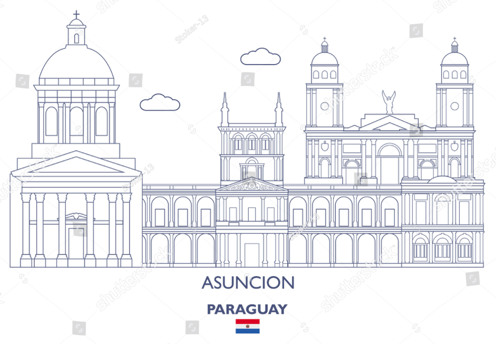
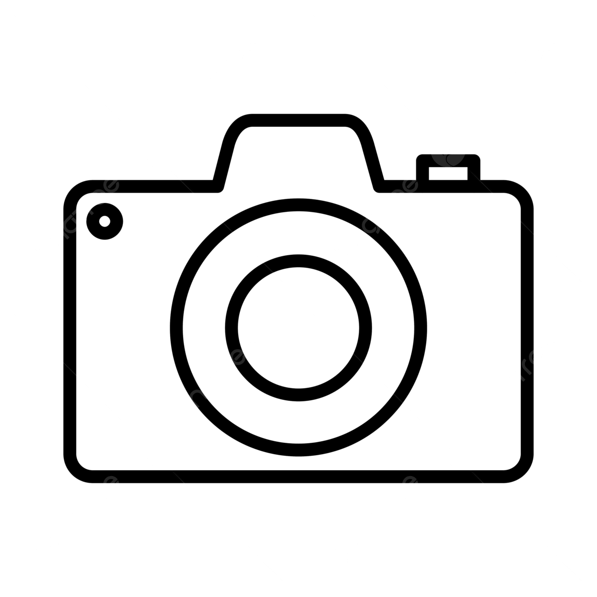
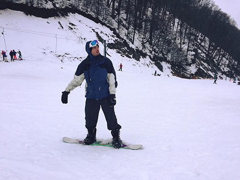

Acerca de mí.
Soy un desarrollador, diseñador, técnico en infraestructura y analista de calidad que ha estado construyendo para la web de alguna manera desde 2025. Me especializo en accesibilidad, rendimiento y usabilidad sin sacrificar la creatividad.
La Costanera de Asunción no será exactamente Silicon Valley, pero crecer aquí te da un montón de espacio para pensar. Cuando no estaba disfrutando del Centro o de los alrededores, estaba aprendiendo a programar. Mucho ha cambiado con los años, pero llevo creando para la web desde que los diseños de tablas y los GIFs de "en construcción" eran lo último.
Tras egresar de la universidad como Ingeniero en Electrónica en 2021. Centré mis esfuerzos en el ámbito de operaciones e infraestructura dentro del país. Al poco tiempo, me uní a uno de los bancos líderes de Paraguay y ascendí hasta llegar a liderar su equipo de operaciones (o "su equipo de Infraestructura y Operaciones" si ese rol encaja mejor).

Naturaleza, animales y viajes.
Fuera del horario laboral, mi enfoque está en desconectar del portátil y pasar el mayor tiempo posible en la naturaleza. Me apasiona el avistamiento de aves y la fotografía de fauna y flora, capturando la tranquilidad que ofrecen los animales. Para esto, utilizo simplemente la cámara de mi teléfono.
Cuando el clima no acompaña o necesito un desafío mental, me dedico a una de mis pasiones: el ajedrez, donde me enfrento a partidas que requieren de la misma concentración que encuentro al aire libre.



